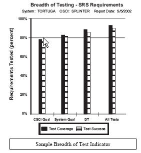

| Example: Measurement Specification: Breadth of Test |
| |
 |
| Details of Breadth of Test indicator |
|
Main Description
Please check on the PSM website to see if a later version is available.
Measurement Specification
Breadth of Test
Version 1.0
|
Information Need Description |
|
Information Need |
· Is project spending meeting cost objectives?
· Will all funding be used by the end of the fiscal |
|
Information Category |
Resources and Cost |
|
Information Need Description |
|
Information Need |
What is the level of functional testing that has been performed and successfully demonstrated |
|
Information Category |
Schedule and Progress
Product Quality |
|
Measurable Concept |
|
Measurable Concept |
Work Unit Progress
Functional Correctness |
|
Entities and Attributes |
|
Relevant Entities |
Functional software or system units |
|
Attributes |
- User functional requirements
- System functional requirements
- Software functional requirements
|
|
Base Measure Specification |
|
Base Measures |
-
Total functional requirements
-
Functional requirements tested
-
Functional requirements successfully tested |
|
Measurement
Methods |
-
Review the top-level specification to identify the number of functional
requirements that are defined (number of “shall” statements).
-
Review the test plan to count the number of functional requirements that will be tested.
-
Review the test reports to count the number of functional requirements that were successfully tested. |
|
Type of Method |
-
Objective
-
Objective
-
Objective if the test results are unequivocal, and subjective if some judgment is needed to determine pass/fail. |
|
Scale |
Integers from zero to infinity |
|
Type of Scale |
Ratio |
|
Unit of
Measurement |
Functional requirements |
|
Derived Measure Specification |
|
Derived
Measure |
-
Test coverage
-
Test success |
|
Measurement
Function |
-
Functional requirements tested divided by total functional requirements,
multiplied by 100 (percent
-
Functional requirements successfully tested divided by functional requirements tested, multiplied by 100 (percent) |
|
Indicator Specification |
|
Indicator
Description and Sample |
Breadth of Test computed two derived measures of the completeness of a functional test program: test coverage and test success. In this case, the functional test coverage did not reach 100%, because the test environment did not allow the test team to test all functional requirements. These functional requirements had to be verified by other means, such as simulation.
 |
|
Analysis
Model |
The breadth of test measure computed the functional correctness of the software by summarizing, over time, the percent of functional requirements tested and the percent that passed test. Both of these values should reach 100% of the total number of functional requirements that can be tested prior to delivery (only 92% of requirements can be tested in the lab environment). The percentage of functional requirements that could not be tested (due to lack of test equipment or other resources) was defined as 8%, which established the upper bound of functional test coverage. |
|
Decision Criteria |
The software would not be accepted for delivery until 90% of all functional requirements
had been successfully tested. |
|
Indicator
Interpretation |
This indicator tells the project manager what portion of the software or system’s functional requirements were successfully tested. This example indicator reports the results of those functional tests that can be performed in the existing test environment. In this example, the percentage of functions that have been proven correct by successful test execution has been steadily increasing during the planned test periods.
However, the high percentage of test coverage (percent tested) and test success (percent tested correct) reported in this indicator did not ensure a successful test program because the results were not reported early. This indicator is a “snapshot” that does not show the time that this data was reported in the project schedule. If this “snapshot” had reported the test status at some reasonable time before system delivery, simulation testing could have been conducted to reduce the risk of latent software defects. However, this “snapshot” was provided only at the end of scheduled testing. Because it was too late to conduct simulation testing, the 8% untested requirements represent a high risk that functional errors remain in the software. |
|
Data Collection Procedure (for each Base Measure) |
|
Complete this section for each base measure listed on the previous page |
|
Frequency of Data Collection |
Monthly, during developmental and operational test activities |
|
Responsible
Individual |
|
|
Phase or Activity in which Collected |
Developmental test phase through operational test: data collection should begin when any software test of functional requirements is performed and continue throughout developmental and operational test activities. |
|
Tools Used in
Data Collection |
-
SAST Test Coverage tool
-
CM Repository |
|
Verification and Validation |
Audits of test records by the test manager or QA manager. |
|
Repository for Collected Data |
-
Test plans (total functional requirements and functional requirements tested)
-
Test reports (functional requirements tested and successfully tested)
-
Test records (all) are aggregated in the CM repository |
|
Data Analysis Procedure (for each Indicator) |
|
Frequency of
Data Reporting |
Monthly (It should have been reported monthly; however, in this project example, it was only reported once, at the end of developmental test.) |
|
Responsible
Individual |
The test manager is the primary analyst. |
|
Phase or Activity in which Analyzed |
Developmental test phase through operational test |
|
Source of Data for Analysis |
Aggregated test records in the CM repository |
|
Tools Used in Analysis |
SAST Test Coverage tool |
|
Review, Report, or User |
Design reviews and monthly progress reports |
|
Additional Information |
|
Additional
Analysis
Guidance |
· This measure defines the quantity of testing performed and achieved on documented requirements. Although testing is for functional correctness, this measure may also report the results of performance, recovery, safety, security, adaptation, and any other requirements imposed by the acquirer that can be demonstrated through testing.
· This measure usually does not track the test results for individual requirements; the number of requirements is reported as cumulative values for a test.
· The analyst should be aware of software requirements that cannot be tested until late in the test process and of software functions that can never be demonstrated prior to deployment.
· As requirements are added and deleted over time, the population of total requirements also changes. This can cause the reported breadth of test indicator to fluctuate for reporting periods when no testing was performed.
· Any change in the software requirements or design baseline requires recalculating the breadth of test measures. When changes are made to requirements or design, previous test results for those areas are no longer valid. Until retesting and re-evaluation of results occurs, the number of requirements tested should drop by the number of requirements to be retested. |
|
Implementation
Considerations |
· Consider assigning priority levels to user requirements and criticality values to system requirements. Data for this measure may be collected and reported separately for each requirements priority level to provide more detailed visibility into which requirements are being tested.
· Depending on how test success criteria are established, failing only one test case may or may not result in failure of the functional test. If sufficient resources exist, an optional indicator for breadth of testing is to report the percentage of test cases performed and passed for each individual functional requirement.
· This measure should also report the results of regression testing on software changes during development and after delivery.
· This measure should include the results of formal government tests, such as DT and OT, particularly if some requirements cannot be adequately demonstrated prior to these system tests. |
|
|